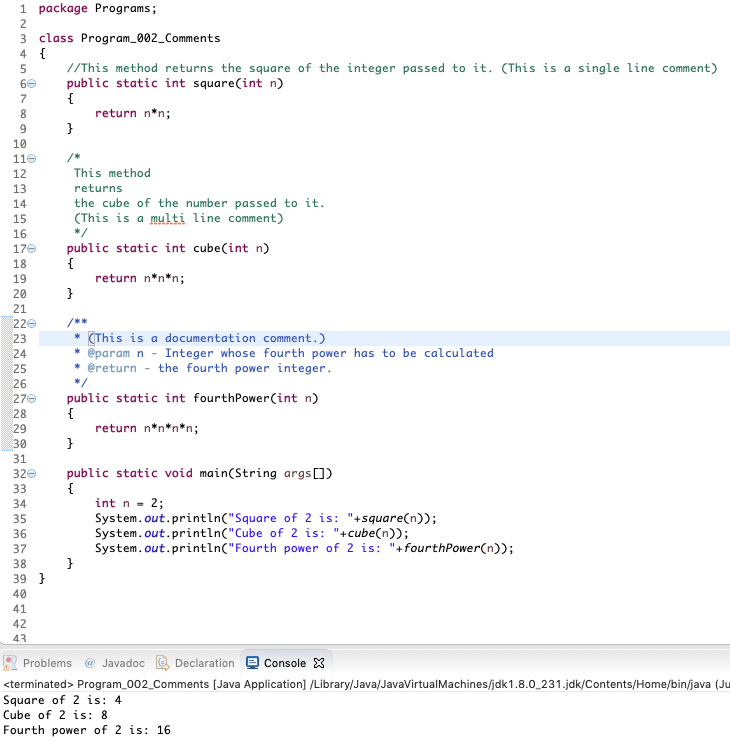

Single Line Comment:- Single Line Comment starts with two forward slashes and end with the end of the line.
Multi Line Comment:- Multiline Comment starts with a forward slash and a star, extend over multiple lines and end a star and forward slash.
Documentation Comment:- Documentation Comment starts with a forward slash and two stars, extend over multiple lines and end a star and forward slash.
NOTE: Documentation comments are used for generating API docs while the other two types of comments are solely used for the purpose of informing the reader about the working of the code.
